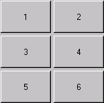
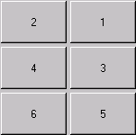

java.awt.GridLayout
java.awt.GridLayout
|
JavaTM 2 Platform Standard Ed. 6 |
|||||||||
| 上一个类 下一个类 | 框架 无框架 | |||||||||
| 摘要： 嵌套 | 字段 | 构造方法 | 方法 | 详细信息： 字段 | 构造方法 | 方法 | |||||||||
java.lang.Object
public class GridLayout
GridLayout 类是一个布局处理器，它以矩形网格形式对容器的组件进行布置。容器被分成大小相等的矩形，一个矩形中放置一个组件。例如，下面是一个将六个按钮布置到三行两列中的 applet：
import java.awt.*;
import java.applet.Applet;
public class ButtonGrid extends Applet {
public void init() {
setLayout(new GridLayout(3,2));
add(new Button("1"));
add(new Button("2"));
add(new Button("3"));
add(new Button("4"));
add(new Button("5"));
add(new Button("6"));
}
}
如果容器的 ComponentOrientation 属性是水平从左到右的，则上述示例生成图 1 中所示的输出。如果容器的 ComponentOrientation 属性是水平从右到左的，则该示例生成图 2 所示的输出。
|  |  |
| 图 1：水平，从左到右 | 图 2：水平，从右到左 |
通过构造方法或 setRows 和 setColumns 方法将行数和列数都设置为非零值时，指定的列数将被忽略。列数通过指定的行数和布局中的组件总数来确定。因此，例如，如果指定了三行和两列，在布局中添加了九个组件，则它们将显示为三行三列。仅当将行数设置为零时，指定列数才对布局有效。
| 构造方法摘要 | |
|---|---|
GridLayout()
创建具有默认值的网格布局，即每个组件占据一行一列。 |
|
GridLayout(int rows,
int cols)
创建具有指定行数和列数的网格布局。 |
|
GridLayout(int rows,
int cols,
int hgap,
int vgap)
创建具有指定行数和列数的网格布局。 |
|
| 方法摘要 | |
|---|---|
void |
addLayoutComponent(String name,
Component comp)
将具有指定名称的指定组件添加到布局。 |
int |
getColumns()
获取此布局中的列数。 |
int |
getHgap()
获取组件之间的水平间距。 |
int |
getRows()
获取此布局中的行数。 |
int |
getVgap()
获取组件之间的垂直间距。 |
void |
layoutContainer(Container parent)
使用此布局布置指定容器。 |
Dimension |
minimumLayoutSize(Container parent)
使用此网络布局确定最小大小的容器参数。 |
Dimension |
preferredLayoutSize(Container parent)
使用此网格布局确定容器参数的首选大小。 |
void |
removeLayoutComponent(Component comp)
从布局移除指定组件。 |
void |
setColumns(int cols)
将此布局中的列数设置为指定值。 |
void |
setHgap(int hgap)
将组件之间的水平间距设置为指定值。 |
void |
setRows(int rows)
将此布局中的行数设置为指定值。 |
void |
setVgap(int vgap)
将组件之间的垂直间距设置为指定值。 |
String |
toString()
返回此网格布局的值的字符串表示形式。 |
| 从类 java.lang.Object 继承的方法 |
|---|
clone, equals, finalize, getClass, hashCode, notify, notifyAll, wait, wait, wait |
| 构造方法详细信息 |
|---|
public GridLayout()
public GridLayout(int rows,
int cols)
rows 和 cols 中的一个可以为零（但不能两者同时为零），这表示可以将任何数目的对象置于行或列中。
rows - 该 rows 具有表示任意行数的值零。cols - 该 cols 具有表示任意列数的值零。
public GridLayout(int rows,
int cols,
int hgap,
int vgap)
此外，将水平和垂直间距设置为指定值。水平间距将置于列与列之间。将垂直间距将置于行与行之间。
rows 和 cols 中的一个可以为零（但不能两者同时为零），这表示可以将任何数目的对象置于行或列中。
所有 GridLayout 构造方法都服从这一规定。
rows - 该 rows 具有表示任意行数的值零cols - 该 cols 具有表示任意列数的值零hgap - 水平间距vgap - 垂直间距
IllegalArgumentException - 如果将 rows 和 cols 的值都设置为零| 方法详细信息 |
|---|
public int getRows()
public void setRows(int rows)
rows - 此布局中的行数
IllegalArgumentException - 如果将 rows 和 cols 的值都设置为零public int getColumns()
public void setColumns(int cols)
cols - 此布局中的列数
IllegalArgumentException - 如果将 rows 和 cols 的值都设置为零public int getHgap()
public void setHgap(int hgap)
hgap - 组件之间的水平间距public int getVgap()
public void setVgap(int vgap)
vgap - 组件之间的垂直间距
public void addLayoutComponent(String name,
Component comp)
LayoutManager 中的 addLayoutComponentname - 组件名comp - 要添加的组件public void removeLayoutComponent(Component comp)
LayoutManager 中的 removeLayoutComponentcomp - 要移除的组件public Dimension preferredLayoutSize(Container parent)
网络布局的首选宽度等于容器中所有组件的最大首选宽度乘以列数，加上水平填充乘以列数减去一，再加上目标容器的左右 insets。
网络布局的首选高度等于容器中所有组件的最大首选高度乘以行数，加上垂直填充乘以行数减去一，再加上目标容器的上下 insets。
LayoutManager 中的 preferredLayoutSizeparent - 要在其中进行布局的容器
minimumLayoutSize(java.awt.Container),
Container.getPreferredSize()public Dimension minimumLayoutSize(Container parent)
网络布局的最小宽度等于容器中所有组件的最大最小宽度乘以列数，加上水平填充乘以列数减去一，再加上目标容器的左右 insets。
网络布局的最小高度等于容器中所有组件的最大最小高度乘以行数，加上垂直填充乘以行数减去一，再加上目标容器的上下 insets。
LayoutManager 中的 minimumLayoutSizeparent - 要在其中进行布局的容器
preferredLayoutSize(java.awt.Container),
Container.doLayout()public void layoutContainer(Container parent)
为了满足 GridLayout 对象的约束条件，此方法会重塑指定目标中的组件。
网络布局管理器根据布局中的行数和列数，通过将容器中的自由空间分割成相等大小的部分来确定单个组件的大小。容器的自由空间等于容器的大小减去所有 insets 和所有指定的水平和垂直间距。给网络布局中的所有组件分配相同的大小。
LayoutManager 中的 layoutContainerparent - 要在其中进行布局的容器Container,
Container.doLayout()public String toString()
Object 中的 toString
|
JavaTM 2 Platform Standard Ed. 6 |
|||||||||
| 上一个类 下一个类 | 框架 无框架 | |||||||||
| 摘要： 嵌套 | 字段 | 构造方法 | 方法 | 详细信息： 字段 | 构造方法 | 方法 | |||||||||
版权所有 2008 Sun Microsystems, Inc. 保留所有权利。请遵守GNU General Public License, version 2 only。